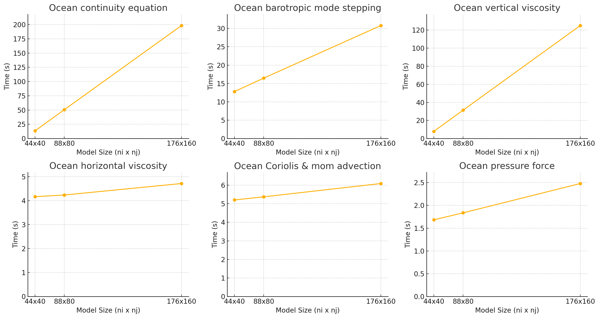
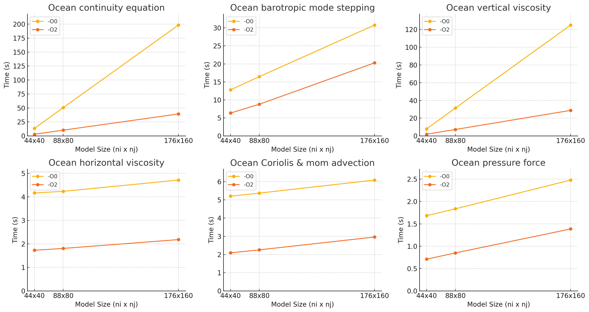
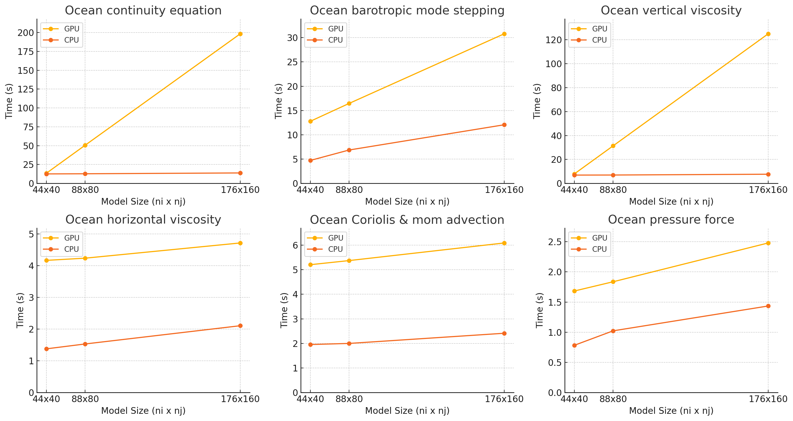
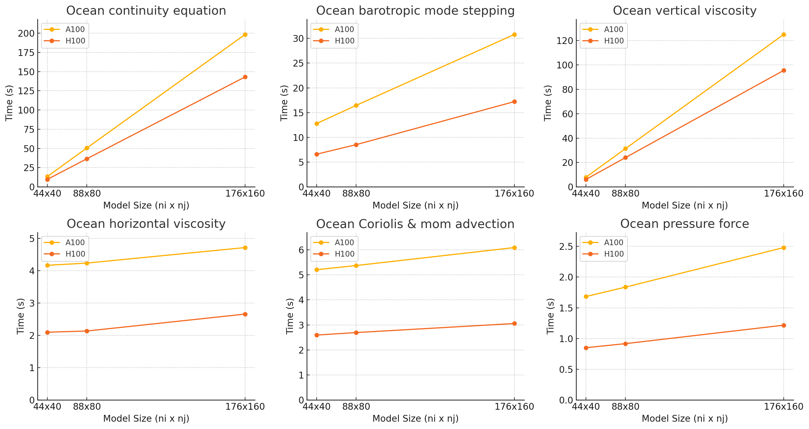
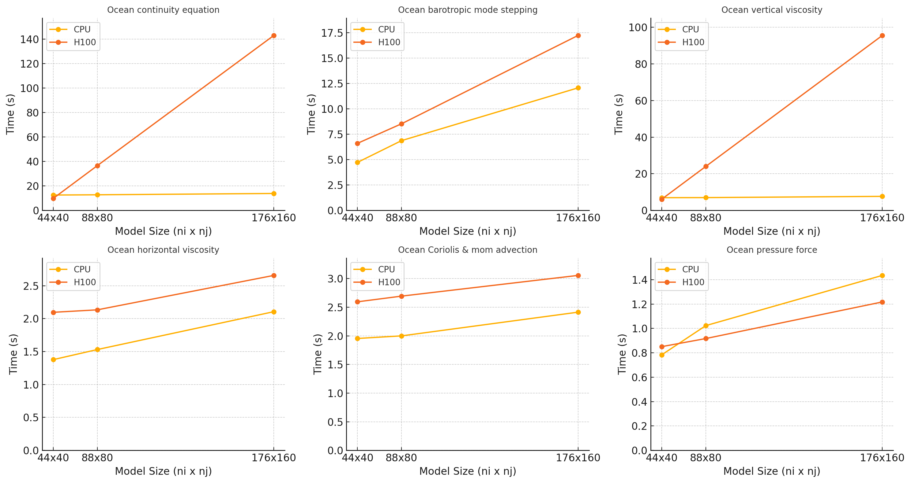
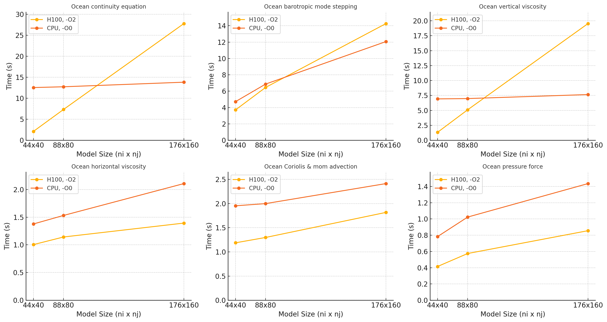

MOM6 GPU Update
Marshall Ward
NOAA-GFDL
2025-07-08
Collaborators
GFDL
- Marshall Ward
- Alistair Adcroft
- Robert Hallberg
ACCESS-NRI (Australia)
- Ed Yang
- Jorge Galvez Vallejo
- Micael Oliveira
Frameworks
- OpenACC
-
Intially successful, but NVIDIA-specific.
- OpenMP
-
More platform-independent, mostly equivalent
- do concurrent
-
Language-intrinsic, best performnace (so far)
Implementation
Explicit kernels were ok but less performant
!$omp target
do k=1,nz
!$omp parallel loop collapse(2)
do j=js,je ; do I=Isq,Ieq
u_bc_accel(I,j,k) = (CS%CAu_pred(I,j,k) + CS%PFu(I,j,k)) + CS%diffu(I,j,k)
enddo ; enddo
enddo
!$omp end targetdo concurrent was simpler, and faster:
do k=1,nz
do concurrent(I=Isq:Ieq, j=js:je)
u_bc_accel(I,j,k) = (CS%CAu_pred(I,j,k) + CS%PFu(I,j,k)) + CS%diffu(I,j,k)
enddo
enddoHybrid Approach
Move data with OpenMP, kernels with do concurrent
!$omp target enter data map(to: G, G%mask2dT, G%areaT)
!$omp target enter data map(alloc: Area_h)
do concurrent (I=Isq-1:Ieq+2, j=Jsq-1:Jeq+2)
Area_h(i,j) = G%mask2dT(i,j) * G%areaT(i,j)
enddo
!$omp target exit data map(from: Area_h)Managed memory?
do concurrent is conservative: it tends to copy, even if
the data is already on the GPU!
"Managed" memory was slow (30s -> 180s), so we are doing manual management
Experiments
double_gyre- Idealized adiabatic layers
benchmark- Thermodynamics
...?
Development
- Source repo:
dev/gpu - Design document
Dyncore Status
| Continuity | Testing (jki) |
| Barotropic | Finished (untuned) |
| Vertical Viscosity | kji refactor complete |
| Horizontal Viscosity | Finished |
| Coriolis/MomFlux | Finished |
| Pressure Force | Finished |
Bitwise-equivalent answers to CPU
Scaling (so far)

Optimized

GPU vs CPU

(1 → 4 → 16 cores)
Resources
NVIDIA
- A100
- H100
- Grace Hopper (?)
AMD
- MI300
A100 vs H100

H100 vs CPU

H100 opt vs CPU

(CPU with -O2 has runtime errors... 🤷)
Current Goals
- OpenMP and
do concurrentproficiency - Majority of dynamic core ported to GPU
- Good scaling so far?
- CPU-competitive? 😶
Next Steps
Immediate goals
- Finish the dynamic core
- Port benchmark
- Investigate scaling (esp wrt CPU)
- GPU communication?